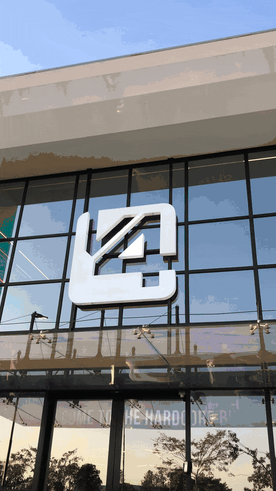

Simmons
D-G
Writer, copywriter
Brazil
.2002
Working on
Marketing
Creative Strategy
Management
Data & Analytics
Branding
Professional Life
2026 - Marketing Coordinator
Mazix (Agro Ibex)
2025 - Copywriter
V4 Company
2024 - Copywriter
Birdclick
2021 - Intern and Copywriter Jr.
Bussolla
About
Writer since 2017, Copywriter since 2021.
Every single company I worked with has benefited from a primary skill of mine: my ability to deep learning and deep work. Alongside with those skills, as a self-taught student, I explored multiple topics to enhance value on a professional standpoint: marketing, entrepreneurship, business, branding, positioning, statistics, data and analytics and also on a personal standpoint: philosophy, literature, psychology, economics, history and religion.
Early life
I was born on March 14th, 2002, in Indaiatuba, São Paulo, Brazil. Always encouraged by my parents to pursue education so that I could provide for myself in a way that they couldn’t. At 15, I remember writing my first essay for a Portuguese class and immediately became captivated by it. In those years I used writing as a way to express myself, and later on as a way to earn my first financial income.
Contact
@dangasparino_
+55 19 98936‑5335
danielvecchigasparino@gmail.com
